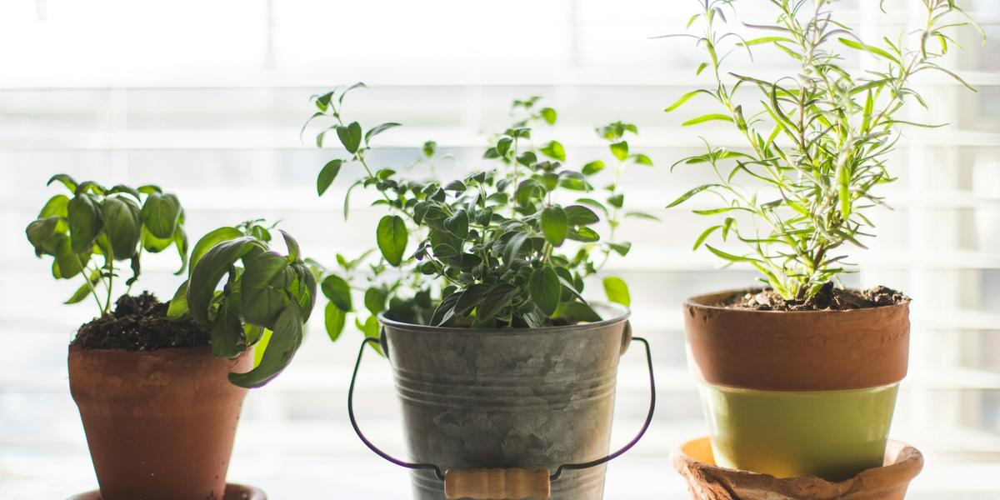

About Julia
I got into hydroponics after learning that even organic fruits and vegetables may not be as nutrient-rich as they once were, and after thinking about how much pesticide residue we can take in when we don't buy organic. I wanted to know exactly how my food was grown, so I started growing it myself.
For the past couple of years, I've been experimenting and learning as I go. Today I grow herbs like cilantro, mint, chives, oregano and sage, along with lettuces, arugula and other leafy greens, all inside my home. When I downsized, a big garden and a greenhouse were off the table. But small spaces shouldn't stop anyone. That's exactly what simple methods like Kratky are made for.
Next, I'm working toward buying land for my tiny home, and I'll keep sharing what I learn along the way. My hope is to inspire you to live more with less and to grow fresh food wherever you are.
This site is about growing your own clean food on a budget in small spaces: apartments, tiny homes, RVs, and mobile homes. It leans eco-conscious (reuse what you have, buy only what you need) and Texas-friendly, because heat changes everything.
I wrote The Soil-Free Farming Revolution for beginners. It covers Kratky, deep water culture (DWC), and nutrient film technique (NFT), with setups you can build for under $50 and a chapter on Texas heat. Get the full guide ($14), or start with the free mini-guide.
How I write
I base technical details on university extension and research publications and link my sources at the bottom of each post. Plants, homes, and water vary, so treat what you read here as a starting point and always follow product labels.
Contact: bepicgirl@gmail.com
Photo credits: photos by toinane, Suri Huang, Caspar Rae, Monika Grabkowska, Elly M, Phil Hearing, Clay Banks, Harry Grout, John Cameron, Sam Jotham Sutharson, Anirudh Janga, Devi Puspita Amartha Yahya, Anthony Ievlev, Daniil Lobachev, Sixteen Miles Out, Markus Spiske, Andrea Davis on Unsplash (Unsplash License).